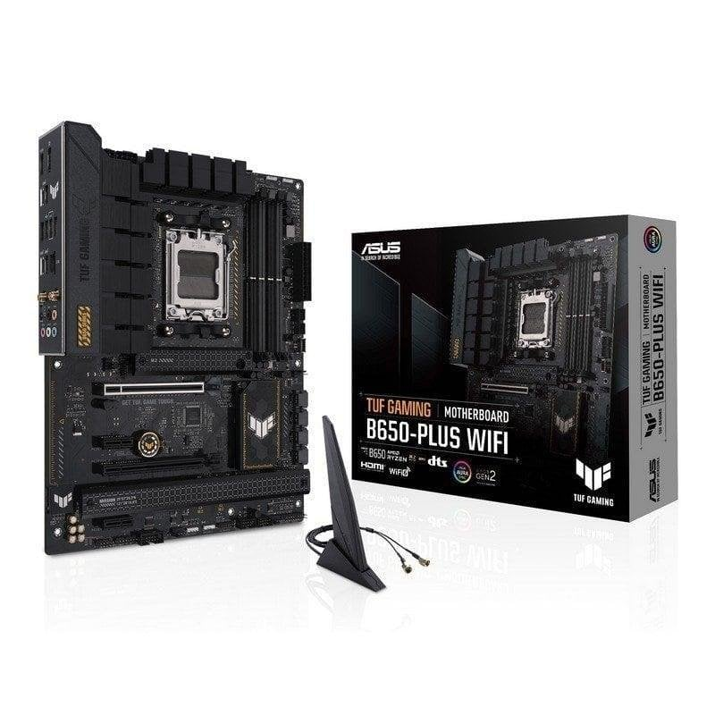
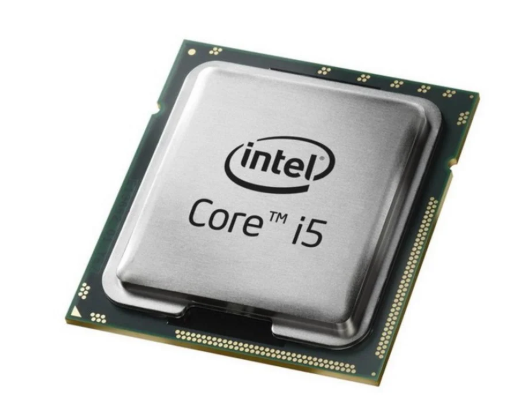
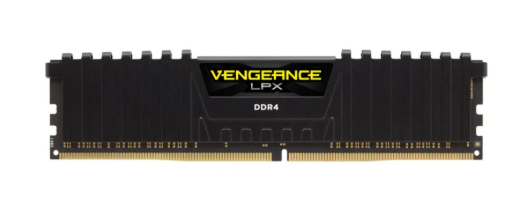
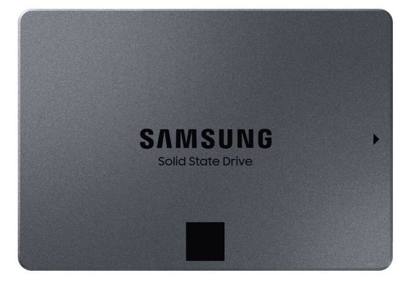
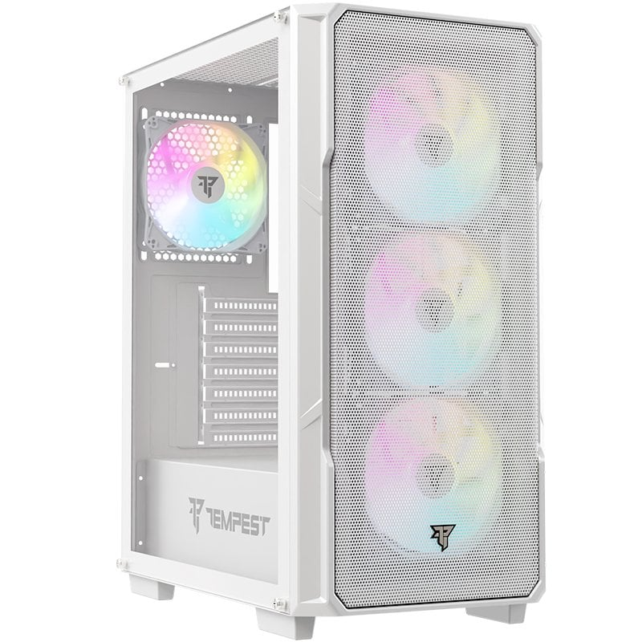
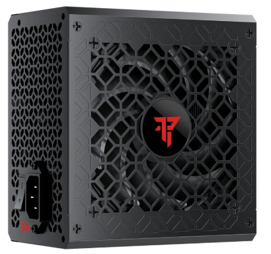
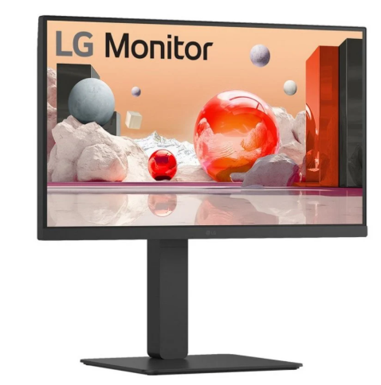

PLACA BASE
La placa base es uno de los principales componentes de un ordenador.
A ella se conectan todo el resto de componentes, dispositivos y periféricos, por lo que hay que escogerla con mucho cuidado,
ya que el resto de componentes deberán ser compatibles con la placa. Las características de la placa escogida son las siguientes:

Características
Marca y socket de procesador compatible: ASUS, Intel LGA 1700
Memoria compatible: DDR4, 4xDIMM máximo 128GB
Almacenamiento: M.2 y SATA
Formato: ATX
Dispone de módulo Wi-Fi
Precio
PROCESADOR
El procesador es el cerebro del ordenador, se encarga de ejecutar todas las instrucciones y procesos del sistema.

Caracteristicas
Marca: Intel Core i5-12400F
Frecuencia: 2.5GHz hasta 4.4GHz
Nucleos: 6 nucleos, 12 hilos
Socket: LGA 1700
Sin grafica integrada
Precio
MEMORIA
La memoria RAM almacena temporalmente los datos de los programas que se están ejecutando.

Caracteristicas
Marca: Corsair Vengeance LPX
Capacidad: 16GB (2x8GB)
Tipo: DDR4 3200MHz
Latencia: CL16
Voltaje: 1.35V
Precio
ALMACENAMIENTO
El disco duro o SSD es donde se guarda de forma permanente el sistema operativo y todos los archivos.

Caracteristicas
Marca: Samsung 870 QVO 1TB
Tipo: SSD SATA
Velocidad lectura: 560 MB/s
Velocidad escritura: 530 MB/s
Formato: 2.5 pulgadas
Precio
TORRE
La torre o caja es la estructura que aloja y protege todos los componentes internos del ordenador.

Caracteristicas
Marca: Nfortec Krater
Formato: ATX, Micro ATX, Mini ITX
Ventiladores: 2x120mm incluidos
RGB: Si, frontal
Panel: Cristal templado
Precio
FUENTE DE ALIMENTACION
La fuente de alimentación convierte la corriente de la red en energía utilizable para todos los componentes del PC.

Caracteristicas
Marca: Nfortec Sagitta 650W
Potencia: 650W
Certificacion: 80 Plus Gold
Modular: Full Modular
RGB: Si
Precio
MONITOR
El monitor es el periférico principal de salida, donde se visualiza toda la información e imagen del ordenador.

Caracteristicas
Marca: LG 24MR400-B 24"
Resolucion: FullHD 1920x1080
Tasa refresco: 100Hz
Panel: IPS
Conexiones: HDMI, VGA
Precio
Precio